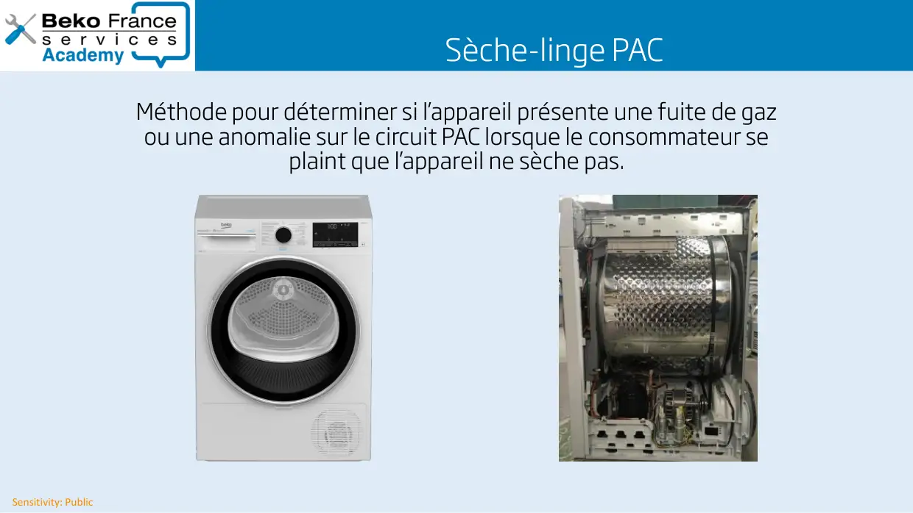
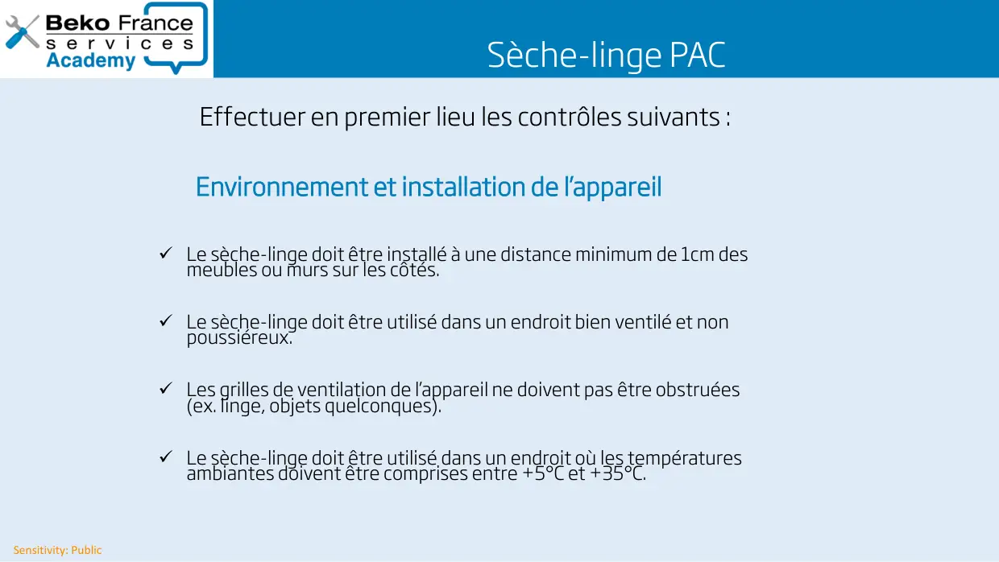
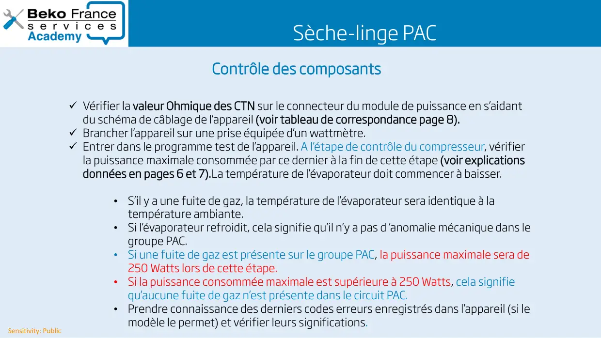
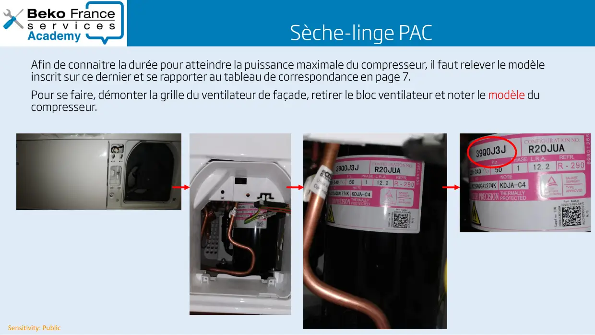
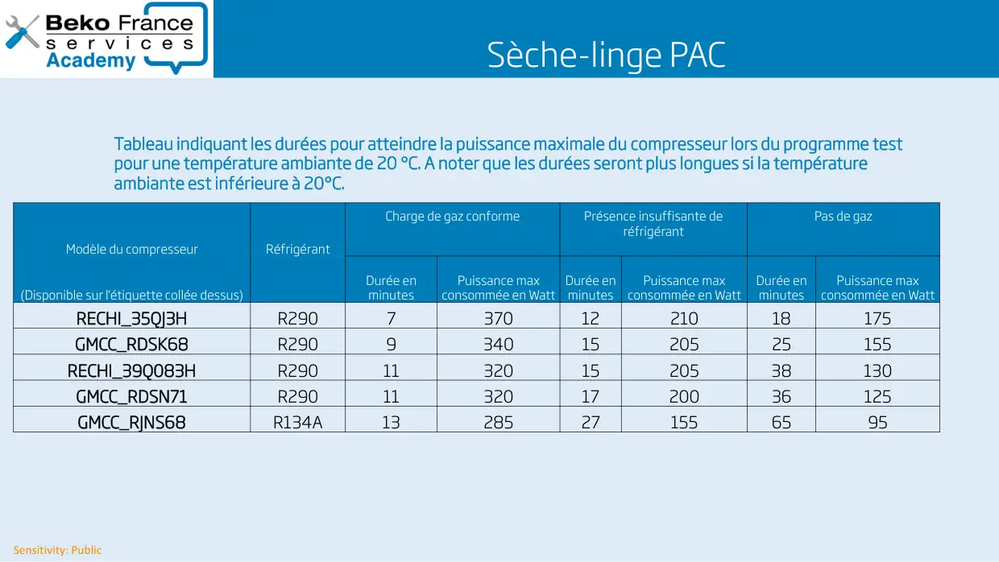
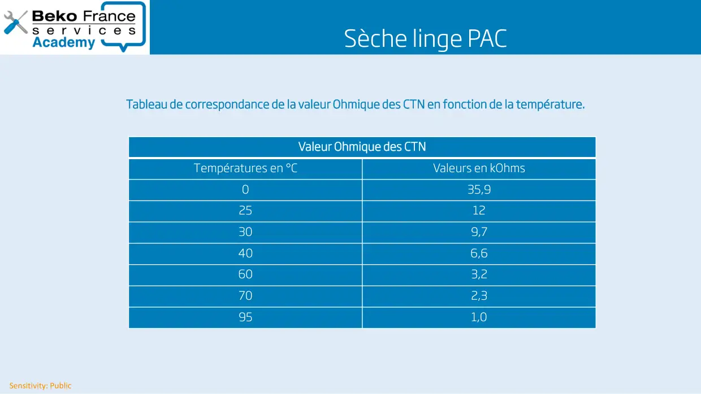

Contrôle seche linge PAC

Sensitivity: PublicSèche-linge PACMéthode pour déterminer si l’appareil présente une fuite de gazou une anomalie sur le circuit PAC lorsque le consommateur seplaint que l’appareil ne sèche pas.
1 / 8Sensitivity: PublicSèche linge PACRappel des consignes de transport et de manutention d’un SL équipé d’une pompe à chaleur (PAC)Dans le cas où l’appareil doit être transporté, le compresseur étant placé à droite, mercide respecter la signalétique ci-dessous visible sur l’emballage du produit neuf.
2 / 8
Sensitivity: PublicSèche-linge PACEffectuer en premier lieu les contrôles suivants :Le sèche-linge doit être installé à une distance minimum de 1cm desmeubles ou murs sur les côtés.Le sèche-linge doit être utilisé dans un endroit bien ventilé et nonpoussiéreux.Les grilles de ventilation de l’appareil ne doivent pas être obstruées(ex. linge, objets quelconques).Le sèche-linge doit être utilisé dans un endroit où les températuresambiantes doivent être comprises entre +5°C et +35°C.Environnement et installation de l’appareil
3 / 8Sensitivity: PublicSèche-linge PACEntretien et nettoyageLe filtre de porte est-il propre et bien mis en place ?L’entrée de l’évaporateur est-elle propre ?UtilisationVérifier que la charge de linge à sécher est bien adaptée au programme sélectionné.Vérifier que le type de linge à sécher correspond bien au programme choisi, ne pasmélanger les types de textile afin d’avoir un bon résultat de séchage.Comprendre la demande de l’utilisateurConstater le fait que le linge ne soit pas sec.Si le problème signalé par l’utilisateur concerne une anomalie de séchage uniforme, s’assurerque le ressenti ne soit pas entre les parties plus fines du linge par rapport aux parties plusépaisses .Il est recommandé de ne pas sécher des petites pièces de linge avec des grandes pièces delinge afin qu’elles ne s’enroulent pas entre elles et restent humides.
4 / 8
Sensitivity: PublicSèche-linge PACContrôle des composantsVérifier la valeur Ohmique des CTN sur le connecteur du module de puissance en s’aidantdu schéma de câblage de l’appareil (voir tableau de correspondance page 8).Brancher l’appareil sur une prise équipée d’un wattmètre.Entrer dans le programme test de l’appareil. A l’étape de contrôle du compresseur, vérifierla puissance maximale consommée par ce dernier à la fin de cette étape (voir explicationsdonnées en pages 6 et 7).La température de l’évaporateur doit commencer à baisser.•S’il y a une fuite de gaz, la température de l’évaporateur sera identique à latempérature ambiante.•Si l’évaporateur refroidit, cela signifie qu’il n’y a pas d ’anomalie mécanique dans legroupe PAC.•Si une fuite de gaz est présente sur le groupe PAC, la puissance maximale sera de250 Watts lors de cette étape.•Si la puissance consommée maximale est supérieure à 250 Watts, cela signifiequ’aucune fuite de gaz n’est présente dans le circuit PAC.•Prendre connaissance des derniers codes erreurs enregistrés dans l’appareil (si lemodèle le permet) et vérifier leurs significations.
5 / 8
Sensitivity: PublicSèche-linge PACAfin de connaitre la durée pour atteindre la puissance maximale du compresseur, il faut relever le modèleinscrit sur ce dernier et se rapporter au tableau de correspondance en page 7.Pour se faire, démonter la grille du ventilateur de façade, retirer le bloc ventilateur et noter le modèle ducompresseur.
6 / 8
Sensitivity: PublicSèche-linge PACModèle du compresseurRéfrigérantCharge de gaz conformePrésence insuffisante deréfrigérantPas de gaz(Disponible sur l'étiquette collée dessus)Durée enminutesPuissance maxconsommée en WattDurée enminutesPuissance maxconsommée en WattDurée enminutesPuissance maxconsommée en WattRECHI_35QJ3HR29073701221018175GMCC_RDSK68R29093401520525155RECHI_39Q083HR290113201520538130GMCC_RDSN71R290113201720036125GMCC_RJNS68R134A13285271556595Tableau indiquant les durées pour atteindre la puissance maximale du compresseur lors du programme testpour une température ambiante de 20 °C. A noter que les durées seront plus longues si la températureambiante est inférieure à 20°C.
7 / 8
Sensitivity: PublicSèche linge PACTableau de correspondance de la valeur Ohmique des CTN en fonction de la température.Valeur Ohmique des CTNTempératures en °CValeurs en kOhms035,92512309,7406,6603,2702,3951,0
8 / 8